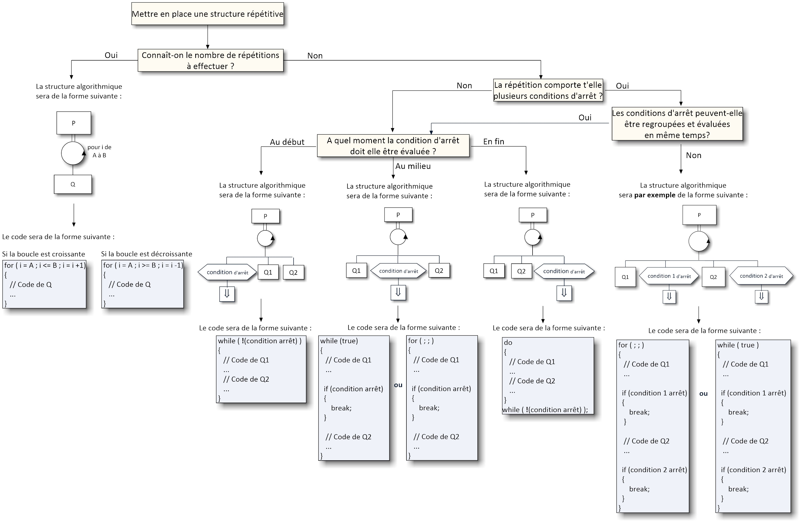

2. L'AFFICHE MÉTHODOLOGIQUE OFFICIELLE DE M. PATRICK ETCHEVERRY
Voici l'arbre de décision méthodologique exact affiché dans les salles de TP et sur Moodle UPPA pour choisir la bonne structure répétitive :

Document officiel M. Patrick Etcheverry — R1.01 Initiation au développement — IUT d'Anglet
3. Explication Détaillée de l'Arbre de Décision (Slide 11-38)
Face à un problème répétitif, le concepteur doit se poser une série de questions hiérarchiques précises :
QUESTION 1 : « Connaît-on le nombre de répétitions à effectuer ? »
-
OUI $
ightarrow$ Utiliser une boucle
for(Boucle à compteur) :- Le nombre de répétitions est connu ou calculable avant même d'entrer dans la boucle.
- Formalisme graphique : Rectangle $P
ightarrow$ Cercle avec flèche circulaire au centre (annotation
Pour i de A à B) $ ightarrow$ Rectangle $Q$. - Formule mathématique du nombre d'itérations : $$ ext{nbRepet} = B - A + 1$$ Exemple (Slide 20) : Pour $i$ de $3$ à $11$, $ ext{nbRepet} = 11 - 3 + 1 = 9$ itérations.
- Traduction C++ :
- Si la boucle est croissante :
for (int i = A; i <= B; i = i + 1) { // code de Q } - Si la boucle est décroissante :
for (int i = A; i >= B; i = i - 1) { // code de Q }
- Si la boucle est croissante :
⚠️ RÈGLE DE L'EXPERT (Steve McConnell, Code Complete, Slide 48-51) :
Ne modifiez JAMAIS l'indice d'une boucleforau sein des actions répétées ! L'indice de boucle est géré exclusivement par l'en-tête dufor. Si vous devez altérer l'indice ou sortir prématurément, c'est que le nombre de répétitions n'était pas connu : utilisez alors une boucle conditionnelle. - NON $ ightarrow$ Le nombre de répétitions est inconnu a priori : Passer à la Question 2.
QUESTION 2 : « La répétition comporte-t-elle plusieurs conditions d'arrêt ? »
-
NON (Une seule condition d'arrêt) $
ightarrow$ Passer à la Question 3 :
« À quel moment la condition d'arrêt doit-elle être évaluée ? »
Cas 1 : Évaluation AU DÉBUT (avant chaque répétition)L'algorithme peut ne jamais exécuter le corps de la boucle si la condition d'arrêt est vraie dès l'entrée.
while (![condition d'arrêt]) { // Code de Q1 // Code de Q2 }Cas 2 : Évaluation AU MILIEU (en cours de répétition)L'algorithme doit exécuter $Q_1$, tester la condition d'arrêt, et n'exécuter $Q_2$ que si l'arrêt n'est pas atteint.
while (true) { // ou for (;;) { // Code de Q1 if ([condition d'arrêt]) break; // Code de Q2 }Cas 3 : Évaluation EN FIN (après chaque répétition)L'algorithme doit exécuter au moins une fois le traitement avant d'évaluer la condition d'arrêt (boucle post-testée, ex. : saisie avec contrôle de validité).
do { // Code de Q1 // Code de Q2 } while (![condition d'arrêt]); -
OUI (Plusieurs conditions d'arrêt) :
« Les conditions d'arrêt peuvent-elles être regroupées et évaluées en même temps ? »
- OUI : On combine les conditions avec les opérateurs logiques (
ET/OU) et on applique les cas Début, Milieu ou Fin. - NON : Les conditions d'arrêt surviennent à des moments différents du traitement. On utilise une boucle infinie avec sorties contrôlées :
for (;;) { // ou while(true) // Code de Q1 if (condition 1 d'arrêt) break; // Code de Q2 if (condition 2 d'arrêt) break; }
- OUI : On combine les conditions avec les opérateurs logiques (
4. Norme C++ Core Guidelines : Règle ES.77
📘 C++ Core Guidelines (Bjarne Stroustrup & Herb Sutter) — Règle ES.77 :
« Minimize the use of
Dans le code de production, l'usage de
« Minimize the use of
break and continue in loops. »Dans le code de production, l'usage de
break doit rester exceptionnel et réservé aux boucles à sorties multiples ou à la clause switch. Privilégiez toujours une condition de boucle explicite dans le while ou do..while.